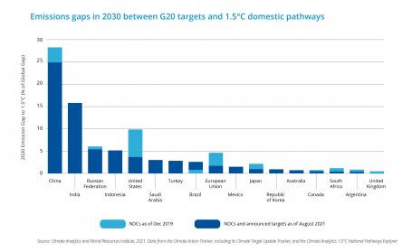

While watching the coverage of the January 6th Committee this past week, I flipped the channel to see what FOX News might be covering instead. The programming executives there had seized on two counter-themes they considered more significant than an attempted coup d’état : Inflation and gasoline prices.
I’m of the age where I clearly remember the tumultuous early 70s, with both televised Watergate hearings that led to Nixon’s resignation and OPEC-induced gasoline shortages that led (at least in part) to runaway inflation. Three administrations (Nixon, Ford, and Carter) wrestled with these challenging economic problems in various ways, including politburo-style freezes on wages and prices imposed at the Federal level. Such freezes were adjudicated by a blue-ribbon (entirely Republican) “ Cost of Living Council ” 1 . “Stagflation” lasted until 1981 when Fed Chairman Paul Volcker and the Federal Open Market Committee raised the Federal funds rate to an astounding 20%. Since then, the Executive has relied chiefly on the Fed Chair to control inflation. But what about gasoline prices given “the climate crisis”?
Earlier this week, at the “Major Economies Forum on Energy & Climate”, a virtual summit hosted by the United States, President Biden presented his view of the problem and what the administration is doing to address it. This meeting was hosted by “Special Presidential Envoy” John Kerry and attended by a host of world leaders as well as the Secretary-General of the UN, António Guterres. It’s an interesting hybrid organization, attempting to address “climate change” diplomatically from the top-down while organizations like the UNFCCC (“United Nations Framework Convention on Climate Change”) and the IPCC attempt to address the problem from the bottom up. For obvious reasons, it was suspended in 2016 and reconstituted in 2020.
I thought I’d review each leader's high-level points and my commentary.
President Biden:
Russia’s invasion of Ukraine is the root cause of inflation and the current energy crisis.
That is certainly one factor. But the lingering effects of COVID (particularly given lockdowns in Beijing and Shanghai) and a flood of Federal spending to rescue the economy also play a role. FOX naturally gravitated toward the latter explanation, blaming Democrats despite bipartisan support (if not votes) for the effort.
As mentioned in a previous installment, 2 I’m more than happy to choose higher gas prices over armed conflict with Russia. But, of course, you’re welcome to make your own choice.
The Executive has limited resources to reduce prices domestically, but useful actions have been taken:
Releasing oil from reserves to increase supply
Helping the EU reduce dependence on Russian natural gas by substituting renewables
Both effects fall squarely within the Executive. Further action requires the participation of the Legislative Branch, which appears unwilling or unable to lift a finger to reduce gasoline prices, presumably out of spite. [For the record, a Democrat-controlled Congress empowered Nixon to regulate wages and prices, then rescinded it after the power was ineffectual.]
Another action (not mentioned by Biden) has been to deregulate the addition of ethanol to gasoline during the summer, with the expectation that an additional supply of liquid fuels will reduce prices. With a “rack” price of $2.82 per gallon (vs. RBOB gasoline at $3.92 per gallon ), adding an extra 5% ethanol to the blend should bring down prices by about 6¢ per gallon.
Finally, a Gasoline Tax holiday is under active consideration. The effect would be immediate, with Federal taxes at 18¢/gallon and State taxes varying from 9¢ in Alaska to 59¢ in Pennsylvania. However, it cannot be executed by the Executive alone and requires Congressional approval.
State legislatures can act, but few have been willing to, probably out of concern for revenue. One notable case is Biden-bashing Florida Gov. Ron DeSantis . He signed a one-month “holiday”, but it’s not effective immediately when it’s genuinely needed. Florida’s holiday is precisely one month: October 2022. So naturally, this would take effect right before the midterm elections. Judge for yourself, but I smell a rat.
This approach is consistent with climate goals because renewables = energy security.
Well, sure, that’s one viewpoint. But, on the other hand, it is only consistent to the extent that higher fuel prices are sustained, generating increased financial incentives to shift supplies toward renewables. But, there is value in a guaranteed supply vs. price uncertainty.
COP26 was “just the kickoff”. Countries without a 2030 target should set one before COP27.
Yeah. COP1 was the “opening kickoff” 26 years ago. Going with the football analogy, we’re deep in the third or fourth quarter, so any “kickoff” must’ve been after the other team scored! Here’s where the game stands:

It’s hard to read and maddeningly difficult to reconstruct from the “cited source”, but the point is clear. We’re well behind where we need to be, and China & India are the most significant factors. They are not stepping up their level of play fast enough, but that may be realpolitik. If the game were football, humans are losing badly, and we have yet to score. Countries failing to “set targets” (unenforceable ones) isn’t the problem. Politicians’ belief that setting targets for future administrations will suffice is.
What the US is doing by itself:
Proposing regulations to reduce methane leaks and flaring in the US.
Using recent legislation to increase funding (>$20B!!) for “innovation” in carbon capture, advanced nuclear, clean hydrogen production, and infrastructure.
Promoting zero-emission EVs with a national network of 500K charging stations, with a goal of half of all passenger vehicles by 2030.
So how much methane do we flare, and how much is leaked? In 2021, the US flared 8.78 billion cubic meters (bcm) of gas , about 6% of the global total. Much of this flaring occurs in North Dakota and West Texas, where it is either impractical (due to geography) or economically unattractive to capture. This argument is a holoeconomic one 3 since flaring is an economically unproductive activity. Similarly, there’s already an economic incentive to minimize leakage. But leaks are harder to measure, so nobody knows how much is lost or where. The EPA estimates 1.4% of production, so this would be another 13 bcm, but this number is squishy. The main question is, “Is this a little or a lot?”
According to the IEA, the EU imported 155 bcm of natural gas from Russia in 2021 , mainly via pipelines, but can reduce demand to around 100 bcm within a year. This value is comparable to global flaring estimates, about 140 bcm per year, so it’s numerically plausible. But, the most significant single flare (in Venezuela) is only about 1% of the total, and the country cannot export natural gas. So, replacing Russian pipeline gas with gas that is currently being flared is a complicated proposal.
If the U. S. acted unilaterally, could we even get that much gas to Europe by ourselves? By the end of 2022, the US will be the world's leading natural gas exporter, with a capacity of 14 billion cubic feet (0.4 billion cubic meters) per day, for a total capacity of about 145 billion cubic meters per year. So, the qualified answer is “yes”. Further, new gas pipelines are coming on line, and we’re getting better at detecting leaks.
What the US is doing with others:
Norway: Supporting the Green Shipping Challenge, entertaining proposals to decarbonize shipping entirely by 2050.
Egypt: Adaptation in Africa event to build resilience on the African continent.
Announced the Global Fertilizer Challenge, raising $100M+ to increase fertilizer efficiency and develop alternatives.
The “challenges” are new initiatives without specific funding attached, and neither has yet released details. If it’s structured like an X-PRIZE Challenge, though, it will be a competitive award for clever solutions. Expect academic and starving small companies to be the principal applicants.
The “Adaptation in Africa” event is still under discussion with the Egyptian government, intended to be set by COP27 (with Egypt as host).
I think that the U. S. is doing more than most. But the question is, “How will the rest of the world react?” Here’s one leader’s take:
Secretary-General Gutteres:
António Guterres, UN Secretary-General, was decidedly unhelpful in his remarks. He used the forum to assert aggressively that “[F]ossil fuel producers and financiers have humanity by the throat”. In his diatribe, he echoed a lot of Michael Mann’s blame-soaked vitriol (which I covered earlier 4 ). However, he goes on to state a few facts that we can check:
Had we invested earlier and massively in renewable energy, we would not find ourselves once again at the mercy of unstable fossil fuel markets.
This statement is arguably true because it focuses on renewables’ undeniable virtue of stability. But it looks backward, not forward. The Secretary-General is a trained engineer but a career civil servant. Consequently, he confuses “investment” with “spending”: Any investor expects to get their money back, at the very least, and if they don’t, they aren’t investors for long. He also cites “instability” as the problem, which ingenious humans can solve in other ways. The problem is CO2.
These renewable energy sources are already cheaper than fossil fuels and create three times more jobs.
If this were true for every application, basic economics says we wouldn’t need to do anything. But it’s a narrow assertion. Solar power is cheaper than coal or gas turbines only when the sun shines. I’ve said it before, and I’ll repeat it: The unavoidable drawbacks of electric power are that it cannot be stored and cannot be transmitted long distances. Neither are issues with geologic carbon. If we intend to go “all-electric” globally, economically-viable solutions to these drawbacks are needed.
The Secretary-General’s proposed solution:
Treat renewable technologies as a freely available global public good.
Expand and diversify renewable energy supply chains.
Shift fossil fuel subsidies to vulnerable people that want to engage in the green economy.
Reform bureaucracies to fast-track approval processes.
And triple public and private investments in renewables to at least $4 trillion dollars a year.
Distilling these solutions:
-
Socialism. See Atlas Shrugged
-
Build more, and hope that competition & scale drives down prices further.
-
Discourage exploration for new energy reserves, and spend on the “vulnerable” instead
-
Deregulate globally
-
Spend more money.
These are arguable points. You can judge for yourself, but in my view, #4 is the lynchpin—without deregulation, it’s slow-rolling business-as-usual. It’s pretty clear from his remarks that he knows that climate change is, at its essence, an economic problem. But, just like Michael Mann, he wants to fix the blame before fixing the problem and is looking for someone else to take responsibility.
My summary viewpoint FWIW:
Biden faces severe political constraints on his powers, but he’s doing what he can in the face of an irascible Congress.
As the leader of the UN, Guterres has no direct power, but he’s using his pulpit to divide government from industry. Unfortunately, this tactic is at cross purposes with finding common ground to solve a global problem.
This council was a Congressionally-authorized cabinet-level advisory board from 1971 to 1974. I’m not enough of a lawyer to confirm it in absolute terms, but I believe that this tool is no longer available to the Executive. If it is, Biden should use it if only for political optics.